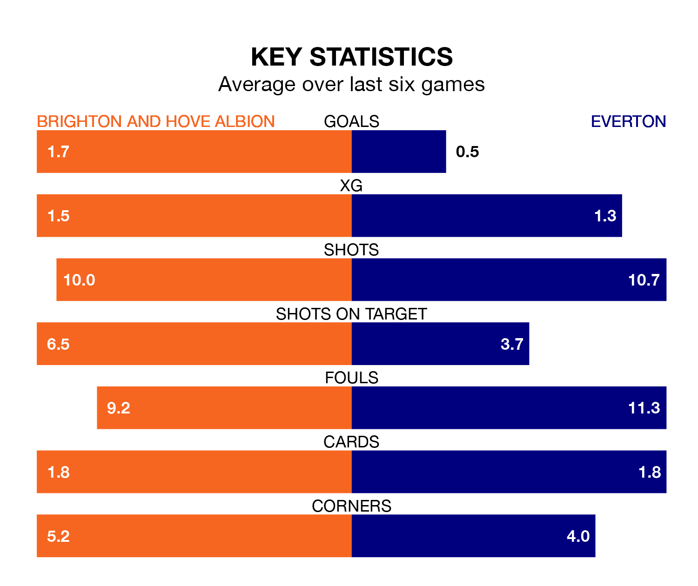

Everton travel to the American Express Community Stadium looking to secure a first win in nine Premier League games against Brighton and Hove Albion on Saturday.
The Toffees have lost four and drawn four matches since they last earned three points – against Burnley on December 16.
They face a Brighton side who have won three and drawn three over that time.
In Jordan Pickford, Everton can rely on one of the league's safest pair of hands. He has kept eight clean sheets in his 25 appearances this season, and no 'keeper has prevented the opposition scoring more often in the Premier League.
In Brighton's net, Jason Steele has two clean sheets in 14 games. He has conceded a goal every 55 minutes, 30% more often than the 70 minutes between goals for Pickford.
In the last 10 years, Brighton and Everton have played each other on 13 occasions. Brighton won four of them, Everton six, and they drew three times.
On average, Brighton scored 1.3 goals and the Toffees 1.8 in those matches.
Their last meeting was on November 4, when they played out a 1-1 draw.
With 27 goals in 25 games so far this season, the Toffees are the league's third-lowest scorers with 1.1 goals per game. But they are conceding fewer than average too, letting in 33 goals at a rate of 1.3 per game.
Albion, meanwhile, are above average scorers, with 1.9 goals per game, compared to a league average of 1.6. They have conceded 1.6 goals per game.
The hosts are seventh in the table after 25 games, of which they have won 10 and drawn eight, earning 38 points.
The away team are five places behind Brighton in 12th, with eight wins and six draws putting them on 30 points.
Brighton's last match was on Sunday, a 5-0 win against Sheffield United, with Simon Adingra (two), Danny Welbeck, Facundo Buonanotte and Jack Robinson (own goal) getting the goals for Brighton.
Everton drew 1-1 with Crystal Palace last time out, on Monday, with Amadou Onana on the scoresheet.
Saturday's match will be refereed by Tony Harrington, who has taken charge of three Premier League games so far this season, issuing no red cards and booking nine players. He has not awarded any penalties.
He is yet to oversee a match featuring either Brighton or Everton this season.
Updated: 10:08 (UTC), 23/02/24